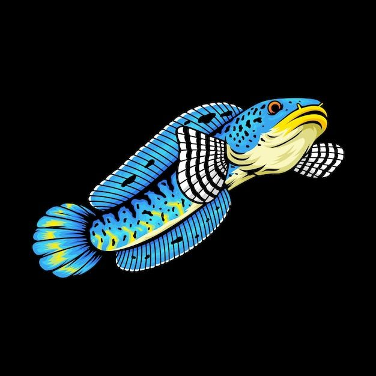

Snakehead Fish
About
Welcome to our dedicated Snakehead Fish page! We are a community of fish enthusiasts eager to share knowledge and information about these unique creatures. Snakehead Fish, often referred to as "snakehead" or "snakehead murrel," are fascinating aquatic creatures. With their slender bodies and agile movements, they never fail to capture the attention of nature enthusiasts. Here, you'll find informative articles, care guides, and the latest insights into Snakehead Fish in the wild and within aquariums. We also strive to raise awareness about the importance of conserving this species. Join us in exploring the intriguing world of Snakehead Fish. If you have questions or would like to contribute, please don't hesitate to contact us. Thank you for visiting!

Articles